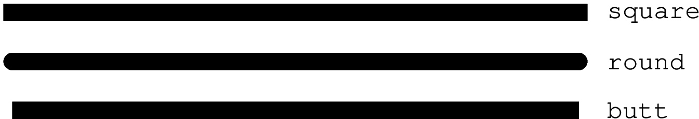
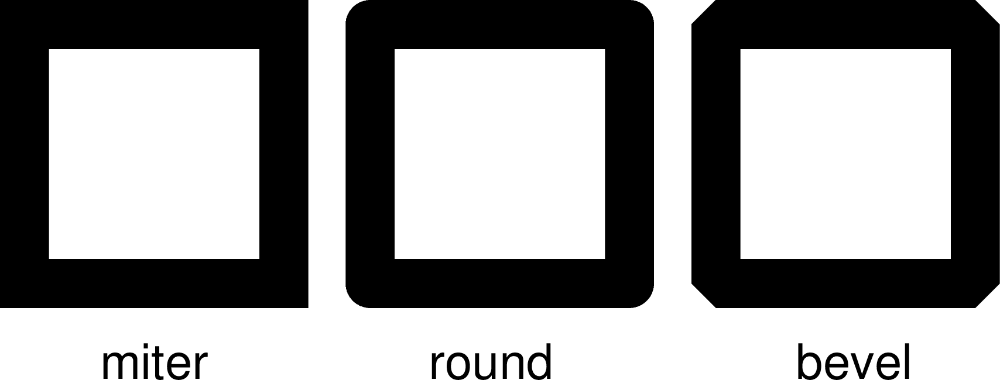

PS參數¶
本節列出所有與PS相關的參數，參數的默認值在中括號內列出。
- PS_CHAR_ENCODING
字符集編碼方式 [
ISOLatin1+|Standard+]GMT使用的字符集編碼方式。可選值包括：
StandardStandard+ISOLatin1ISOLatin1+ISO-8859-x（x取值爲1-10或13-15）
若安裝GMT時使用SI單位制，則默認值爲ISOLatin1+編碼；否則使用Standard+編碼。
- PS_COLOR_MODEL
生成PS代碼時顏色所使用的色彩模型 [
rgb]可以取RGB、HSV、CMYK或GRAY。若設置爲HSV，其不會影響繪圖過程中使用RGB指定的顏色；若設置爲GRAY，則所有的顏色都將使用YIQ方法轉換成灰度。
- PS_COMMENTS
生成的PS代碼中是否包含註釋信息 [false]
若爲
true，則生成的PS文件中會包含註釋，用於解釋文件中操作的邏輯，當你需要手動編輯PS文件時比較有用。默認情況下，其值爲false，即PS文件中不會包含註釋，此時生成的PS文件更小。- PS_LINE_CAP
控制線段的端點的繪製方式 [
butt]可以取如下值：
butt：不對端點做特殊處理，即端點是矩形（默認值）round：端點處爲直徑與線寬相等的半圓弧square：端點處爲邊長與線寬相等的半個正方形
下圖展示了該參數取不同值時線段端點的區別。需要注意，圖中三條線段的長度是相同的，但因參數設置不同而導致線段看上去長度不同。
- PS_LINE_JOIN
控制線段拐點的繪製方式 [
miter]可以取
miter、round、bevel下圖展示了
PS_LINE_JOIN取不同值時線段拐點的繪圖效果。當線寬較小時，幾乎看不出來區別，這裏爲了顯示的效果，將線寬設置爲20p。- PS_MITER_LIMIT
設置mitered拐點的角度閾值 [35]
當兩個相交的線段之間的夾角小於該閾值時，則該拐角會被bevelled而不是被mitered。該參數的取值範圍爲0到180。若設置爲0，則使用PS的默認值（11度），若設置爲180，則所有拐角都會被beveled。
- PS_MEDIA
設置當前紙張的尺寸 [a4|letter]
下表列出了GMT預定義的若干種紙張尺寸及其對應的寬度和高度（單位爲points）。
GMT預定義紙張大小¶ Media width height Media width height A0 2380 3368 archA 648 864 A1 1684 2380 archB 864 1296 A2 1190 1684 archC 1296 1728 A3 842 1190 archD 1728 2592 A4 595 842 archE 2592 3456 A5 421 595 flsa 612 936 A6 297 421 halfletter 396 612 A7 210 297 statement 396 612 A8 148 210 note 540 720 A9 105 148 letter 612 792 A10 74 105 legal 612 1008 B0 2836 4008 11x17 792 1224 B1 2004 2836 tabloid 792 1224 B2 1418 2004 ledger 1224 792 B3 1002 1418 B4 709 1002 B5 501 709 用戶還可以用
WxH的格式完全自定義紙張尺寸，其中W和H分別爲紙張的寬度和高度。比如12cx12c表示紙張爲寬度和高度都爲12釐米。若某些尺寸經常使用，用戶還可以自定義紙張格式，只需要新建或編輯
~/.gmt/gmt_custom_media.conf即可，文件格式也很簡單:# 紙張格式名 寬度 高度 paper1 2000 3000 paper2 3000 0
紙張高度爲0，表示紙張可以向上無限延展。
- PS_PAGE_COLOR
- 設置紙張的背景色 [
white] - PS_PAGE_ORIENTATION
設置紙張方向 [
landscape]注解
僅GMT經典模式下有效，現代模式下紙張始終是 protrait 模式。
可以取
portrait或landscape。- PS_SCALE_X
繪圖時X方向的全局比例 [1.0]
用於實現圖像的整體縮放。
- PS_SCALE_Y
繪圖時Y方向的全局比例 [1.0]
用於實現圖像的整體縮放。
- PS_TRANSPARENCY
設置生成PS文件所使用的透明模式 [Normal]
可取值包括Color、ColorBurn、ColorDodge、Darken、Difference、Exclusion、HardLight、Hue、Lighten、Luminosity、Multiply、Normal、Overlay、Saturation、SoftLight、Screen
- PS_CONVERT
- 現在模式下在執行
gmt end命令時GMT會自動調用 psconvert 生成用戶指定格式的圖片。該選項用於控制調用psconvert是的默認參數，多個參數之間以逗號分隔 [A,P] - PS_IMAGE_COMPRESS
設置PS中的圖像壓縮算法 [deflate,5]
可以取值爲：
rle：Run-Length Encoding schemelzw：Lempel-Ziv-Welch compressiondeflate[,level]：DEFLATE compression，level可以取1到9；none：不壓縮，相當於deflate,5。